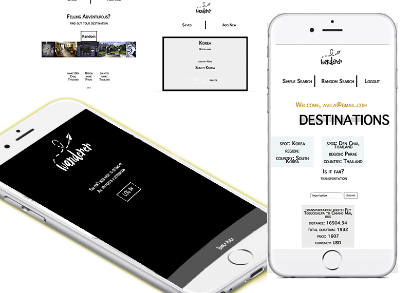
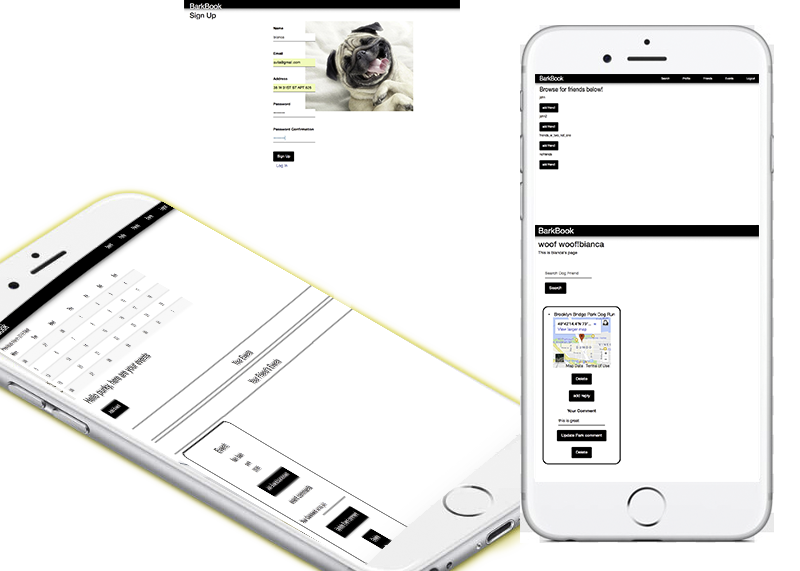
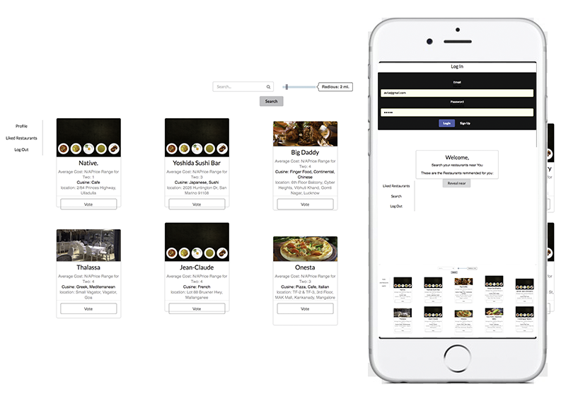
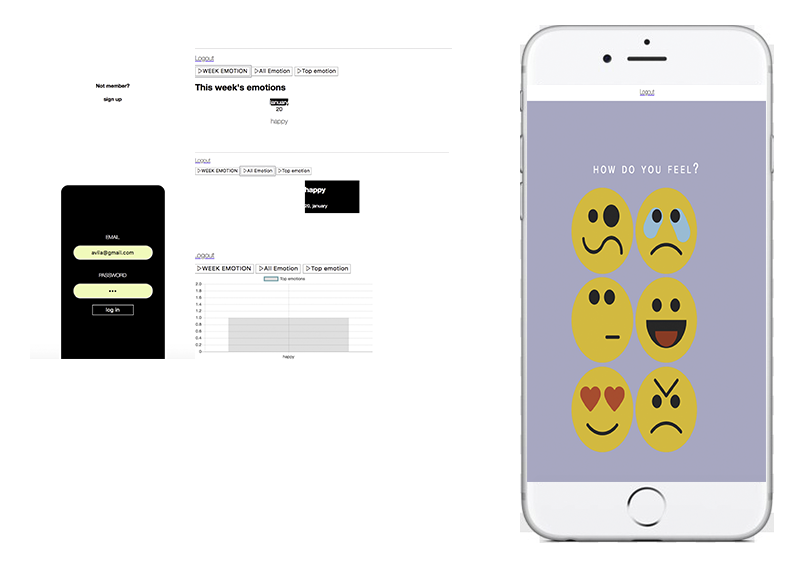
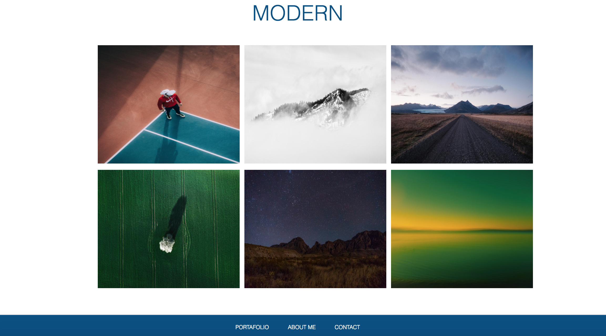
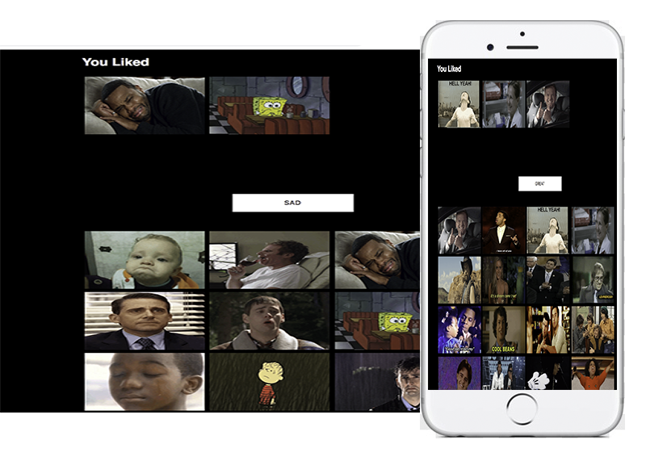
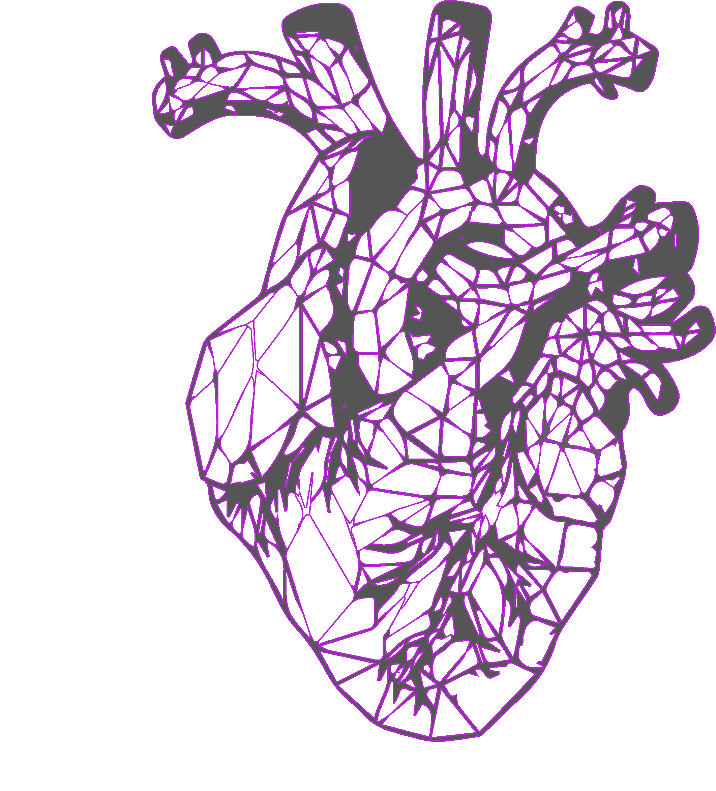
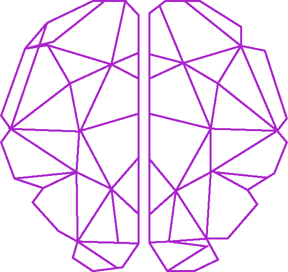
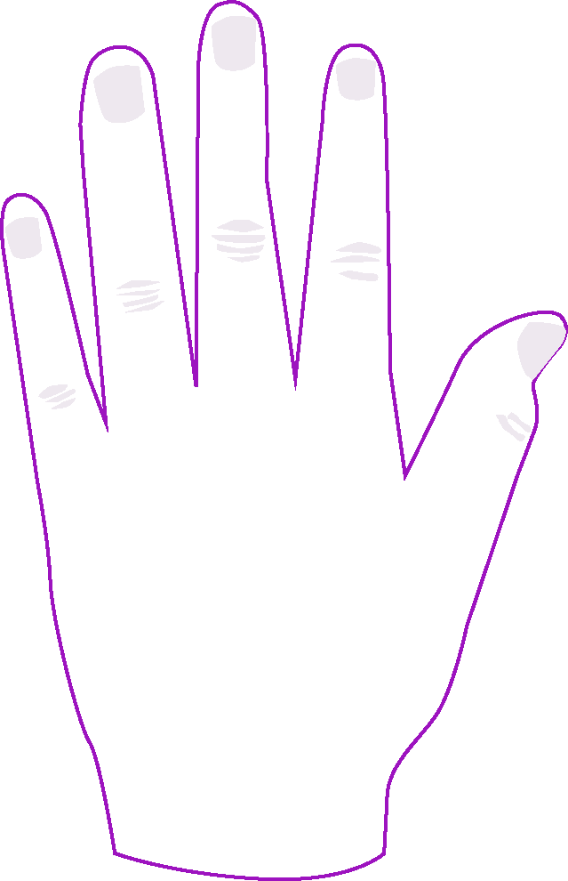

Bianca
avila
full-stack Developer


Front-End
Responsive web applications across platforms.
Full-Stack
RESTful web apps integrating flexible CRUD user interphase.
React.js
Seamless user experience Web apps.
Express
Dynamic Web Apps with basic CRUD utilizing PostgreSQL.

Restful traveling app that integrates a flexible CRUD user interphase to provide a relevant information regarding travel destination from API's.
Technologies:
JavaScript, Postgresql, Node.js and Express.js

Ruby on Rails dynamic web app with full CRUD utilizing a friend relationship database with sql allowing the user to see friends profile and comment on their events and saved locations
Technologies:
Ruby, Ruby on Rails and Sql

Full-Stack React.js application featuring CRUD user interface with authentication.The web app premise is to suggest most voted restaurants nearby to the user's location.
Technologies:
React.js,node.js and express.js

Full-Stack express.js with the premise of tracking daily emotions and allowing the user to see them weekly, monthly through Chart.js.
Technologies:
express.js,node.js and sql
Full-Stack React.js application featuring CRUD user interface with authentication.The web app premise is to suggest most voted restaurants nearby to the user's location.
Technologies:
React.js,node.js and express.js

Landing web page featuring an intuitive navigation framework
Technologies:
react.js

Simple search application retrieving and saving information from GIF api.
Technologies:
React.js
Restful traveling app that integrates a flexible CRUD user interphase to provide a relevant information regarding travel destination from API's.
Technologies:
JavaScript, Postgresql, Node.js and Express.js
Full-Stack express.js with the premise of tracking daily emotions and allowing the user to see them weekly, and monthly throught a dependency called chart.js to display the emotions that tha user have picked the most.
Technologies:
express.js,node.js and sql

LOVE

CORE

SKILLS

I love discovering places
core info
Catracha passionate about new media, learning new technologies and eager to bring designs to life with code. I specialize in a multidisciplinary approach by incorporating my background in marketing and communications into development.
I studied Marketing in Honduras and then mastered in communications in NYC. During this period I started immersing into front-end development which turned out to be the most gratifying little victories and a journey of discoveries.
In pursuit of my passion for creating meaningful and relatable things, I leaped into web development to start a new chapter in my career by enrolling at General Assembly, where I gain the full stack core.
Since then I've been participating as a scholar in south korea whilst furthering my skills as a developer through freelance and self-study.
*Hover or click to discover my skills*
FRONT END
BACK END
안녕! I'm Bianca Avila a fast learner eager to embrace new technologies to inspire change through clean design, DRY code, and intuitive experiences. In pursuit of my passion for creating meaningful and relatable things, I leaped into web development to start a new chapter in my career as a full-stack developer.
ABOUT